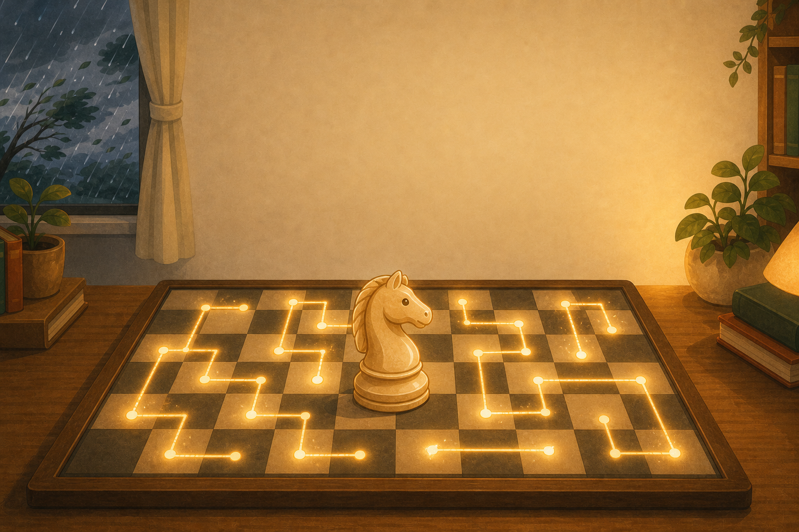
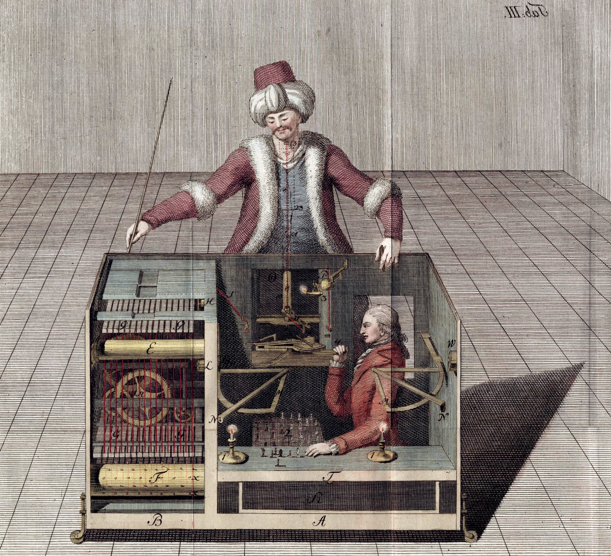
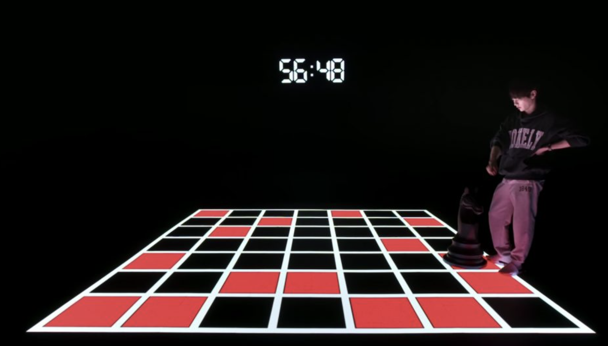
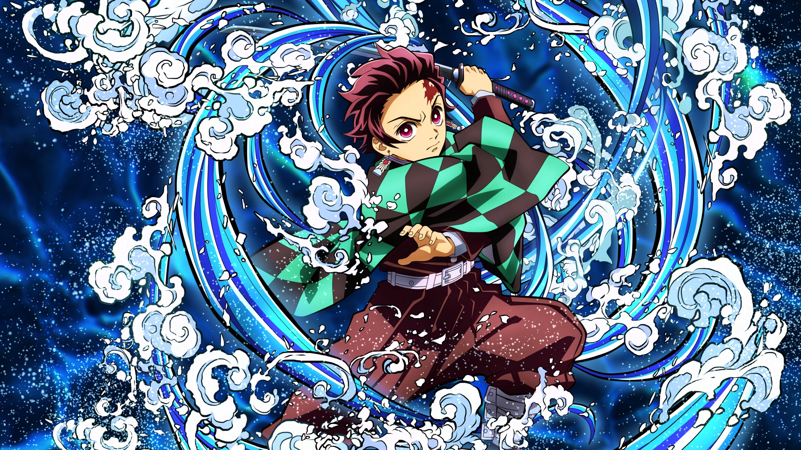
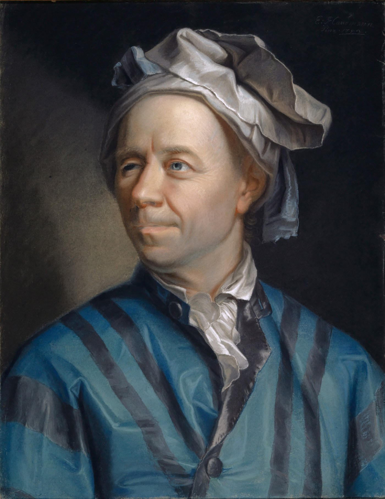

颱風天線上限定課 · 第 1 節認識騎士巡遊——
從棋盤到千年謎題
從棋盤到千年謎題
馬走「日」字，走遍每一格
中高年級 · 40 分鐘
Google Meet 分組
中高年級 · 40 分鐘
Google Meet 分組
02線上課默契
上課前，先約好四件事
默契一
開鏡頭、關麥克風
看得到你，聲音先靜音。
默契二
發言先舉手
想說話按「舉手」，老師點到再開麥。
默契三
分組回得來
進小組玩，聽到通知就回主房間。
默契四
像馬走「日」
照規則走，今天我們就是一隻守規矩的馬。
01
先認識它
騎士巡遊，
是什麼遊戲？
是什麼遊戲？
先聽一個「下棋機器人」的故事，再換你親手玩。
04馬走「日」字
騎士巡遊的玩法
- 馬走「日」字：像西洋棋的馬，走一個 L 形。
- 每一步：中間的馬，能跳到周圍「８」個位置。
- 目標：把棋盤「每一格恰好踩一次」。
05下棋機器人 The Turk
兩百多年前，有一台「下棋機器人」

銅版畫 Racknitz, 1789 · 公有領域它叫「土耳其行棋傀儡」，會自己動手下棋，還贏過拿破崙。巡迴表演了整整 80 年——它最拿手的招牌，就是騎士巡遊。
先猜一猜（留言區）
- 你覺得，這真的是「機器人」在下棋嗎？
- 還是……裡面「藏了什麼祕密」？
06揭曉 · 藏在箱子裡
揭曉
箱子裡，其實
藏著一個「真人」。
藏著一個「真人」。
它不是真的會思考的機器人——桌子底下躲了一位西洋棋高手。但它最愛表演的那套騎士巡遊，正是我們今天要親手玩的謎題。
07看騎士走好走滿
看騎士，把整個棋盤「走好走滿」
一條真正的巡遊：每一步都是「日」字，36 格恰好各踩一次——等一下換你來試。
08試玩前，先講規則
等一下你要玩的：騎士巡遊基礎版（5×5）
- 棋盤大小選「5×5」：一共 25 格，最好入門。
- 模式用「開放式巡遊」：走遍每格就好。
- 點任一格放騎士：那格就是起點，馬走「日」字跳。
- 走錯按「回復」：退一步，換條路再試。
目標：走遍每一格就成功，先「不用」回起點。
09分組時間
02
千年謎題
一道，
一千年的謎題
一千年的謎題
從去年的電視節目，一路回到三百年前的宮廷。
11去年，它上了 Netflix
去年，這道千年謎題上了 Netflix 節目

圖：Netflix《魔鬼的計謀 2》
隱藏關卡要「連破」6×6、7×7、8×8 —— 正好是我們今天的「難度階梯」。
千年謎題 · 段4
歐拉與宮廷遊戲
三百年前的歐洲宮廷，貴族們就圍著棋盤，玩著我們今天玩的同一道謎題。
13貴族們都在瘋這一題
三百年前，貴族們都在瘋這一題

水之呼吸
圖：《鬼滅之刃》

計算之呼吸
歐拉 Euler
1707–1783
1707–1783
水之呼吸 vs 計算之呼吸
這道謎題三百年前就被寫進《數學與物理娛樂》，成了貴族間的熱門遊戲。
- 規則很簡單，大家卻只能靠運氣反覆試——湊出的答案無法複製。
- 直到歐拉：別人想「找答案」，他只想找方法。
14一個人的武林
1758 年底 · 柏林科學院
懸 賞
4000 法郎
徵求：騎士巡遊的解法
一年後，這筆獎金卻發不出去——沒人得獎，也沒人落選。很高的機率，根本沒人參加這場比賽。
「歐拉應該已經解完了吧。」
「不可能解贏歐拉的。」
這是一場一個人的武林。
03
換你再玩
再玩一次，
這次要「走一圈回來」
這次要「走一圈回來」
而且藏著一個「為什麼」——等你自己試出來。
16封閉式巡遊 · 先猜再玩
封閉式巡遊
封閉式巡遊：不只走遍每一格，最後一步還要剛好跳回起點，繞成一整圈。這次先玩 5×5，再玩 6×6。
操作提示
左上角可切「開放／封閉」，這次選「封閉」。
哪種棋盤做得到？留言區告訴我：
5×5
留 5
6×6
留 6
都可以
留 56
17分組時間
分組時間
封閉式巡遊・5×5 → 6×6
5 分鐘
回小組，把模式切到「封閉式巡遊」：先玩 5×5、再玩 6×6，看看哪一種能走一圈回到起點。
18現場發現 · 為什麼
剛剛的發現
5×5 怎麼試都「回不去」……
6×6 卻有人成功了！
6×6 卻有人成功了！
同樣是走一圈回起點，只是換了棋盤大小，結果卻天差地遠。這中間，到底藏著什麼祕密？
19不用公式，只用彩色筆
換個角度
不用任何公式，
只要一盒「彩色筆」。
只要一盒「彩色筆」。
剛剛你們親手試過了：5×5 繞不回起點、6×6 卻可以。為什麼？祕密，就藏在棋盤格子的「顏色」裡。
20每步一定換色
第一步：把棋盤塗成黑白
像西洋棋一樣塗成黑白相間，然後盯著騎士看：它從黑格走一步「日」字，會落在白格；再走一步，又回到黑格。騎士每走一步，顏色一定會換——黑白黑白，嚴格輪流。
記住這把鑰匙
- 每一步：黑↔白，一定換色
- 不可能連續踩兩個同色
215×5 的矛盾
數一數，就找到矛盾
騎士每走一步都會換色。從第 1 格開始，格子的顏色就一路交替下去：
- 奇數號一定黑、偶數號一定白 → 第 25 格是奇數，還是黑。
- 要「封閉」，第 25 格得再跳一步回第 1 格。
- 可是第 25 格黑、第 1 格也黑——黑接黑，中間怎能再換一次色？矛盾！
結論：5×5 封閉巡遊，絕對不可能
225×5 不行、6×6 可以
關鍵是格數的「奇偶」
6×6（36 格）
36 格＝偶數繞回起點
5×5＝25 格（奇數），最後一格和起點同色，黑接黑跳不過去 → 接不回起點；6×6＝36 格（偶數），最後一格和起點異色，黑→白剛好接得回 → 有機會。
＊「有機會」不是保證——4×4 也是偶數，卻整個無解。
＊「有機會」不是保證——4×4 也是偶數，卻整個無解。
23數學家最強的武器
我們剛剛一起做了一件很厲害的事
1
你「沒有」把 5×5 的每一種走法都試過——那多到根本試不完。
2
但你只用「黑白交替＋奇偶」這麼簡單的概念，就敢肯定地說：一定做不到。
3
數學家最強的武器：用很簡單的想法，回答看起來不可能回答的問題。
這比走完一百盤棋還厲害。這就是數學的思考。
04
CHAPTER 04
貓抓老鼠
剛剛我們用黑白格證明了「不可能」——現在，用同一個祕密來玩個遊戲。
25貓抓老鼠｜遊戲規則
規則很簡單，貓抓得到嗎？
黑白格盤上放一隻貓、一隻老鼠，兩個輪流走。
怎麼玩
- 每步只能走上下左右一格，而且一定要走
- 走一步就換一次色（黑↔白）
- 貓走進老鼠那格，就算抓到
那，貓抓不抓得到？先別急著猜——等一下換你當貓試試看。
小提醒上過「數感思考課」的同學先幫忙保密喔。
26貓抓老鼠｜分組玩玩看
分組時間
分組玩貓抓老鼠
4 分鐘
兩種開局都試試看：一種貓和老鼠「同色」、一種「異色」，你當貓去追，觀察看看——哪一種抓得到、哪一種怎麼追都差一步？3～4 人一組，記得把鏡頭打開。
遊戲網址：上線後補
27玩後討論｜同色為什麼追不到
剛剛同色開局的組，是不是追不到？
一起看為什麼
剛剛玩「同色開局」的那幾組，是不是不管怎麼追，都差那麼一步、就是抓不到？我們一起看動畫，看看為什麼。
同色開局：老鼠穩贏，貓怎麼追都差一格
28玩後討論｜異色一定抓得到
那異色開局呢？一定抓得到
剛剛玩「異色開局」的組，是不是追一追就抓到了？貓一步一步把老鼠逼到角落，牠沒地方跑。
決定勝負的不是速度，是顏色（奇偶）——跟騎士巡遊，是一樣的道理。
29數學的威力
一個數學觀念，解決好多問題
同一個「每步換色＋數奇偶」，
證明了巡遊不可能，
也看穿了貓鼠的輸贏。
證明了巡遊不可能，
也看穿了貓鼠的輸贏。
第一節，我們認識了這道千年謎題
馬走「日」字、走遍每一格，就叫「騎士巡遊」；我們還親手發現：5×5 繞不回起點、6×6 卻可以，祕密就在棋盤的顏色。
下一節：讓騎士走得更聰明、更漂亮。
下一節：讓騎士走得更聰明、更漂亮。